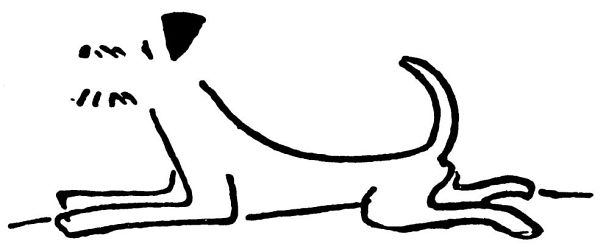

O chrtech a jiných psech
Kdepak, chrty nestvořil Stvořitel, to by byla mejlka; chrty stvořil zajíc. Nejprve stvořil Stvořitel všechna zvířata, a psy, jakožto ty nejlepší, si nechal na konec. Aby mu to šlo rychleji od ruky, nachystal si tři hromady: hromadu kostí, hromadu masa a hromadu chlupů, a z těch tří hromad dělal psy. Nejdřív udělal foxteriéry a stájové pinče, – proto jsou tak chytří; a když se chtěl pustit do dalších, zvonilo poledne. „Nu dobrá,“ řekl Stvořitel, „když padla, nechám toho; však v jednu hodinu zase začnu tvořit.“ A šel si odpočinout.
A vtom podle té hromady kostí přeběhl zajíc. V těch kostech to zaharašilo, vyletěly a začaly štěkat a honit zajíce. Tím se z nich udělal chrt. Proto je chrt nic než samá kostička, ani lotu masa na sobě nemá.
Ta hromada masa, ta z toho dostala hlad; počala se vrtět a funět, a udělal se z ní buldog neboli boxer a šel se nažrat. Proto jsou boxeři samé maso.
A když to viděla ta hromada chlupů, podrbala se a šla se taky nažrat. Tak vznikl bernardýn, který je samé chlupy, a ze zbytku těch chlupů vznikl pudlík, který je také samé chlupy, a zbyl tam ještě jeden chumáček chlupů, a z toho se udělal takzvaný japončík čili pejsánek pekinský.

Když se Stvořitel vrátil o jedné hodině ke svým třem hromadám materiálu, nebylo tam už skoro nic. Zbyl tam jen jeden dlouhý ocásek, pár uší od ohaře, čtyři malé nožičky a jeden hrozitánský trup. Ja, co s tím? Tak z toho Stvořitel udělal jezevčíka neboli dakla.
Pamatuj si to, Dášo, a nevšímej si chrtů, ani buldogů, ani bernardýnů, ani pudlů, protože to nejsou ti praví psi pro tebe. A konec.